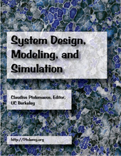

Claudius Ptolemaeus, Editor System Design, Modeling, and Simulation Using Ptolemy II, Ptolemy.org, Draft Version 0.03, 2011. This book describes the principles and practice of system design, modeling, and simulation, using Ptolemy II to illustrate the mechanisms.